Herramientas y Métodos en Ingeniería del Software. Joaquín Cañadas <jjcanada@ual.es>, Francisco García <paco.garcia@ual.es>
Version 0.26.1
-
Crear una infraestructura de CI/CD en GitHub mediante el uso de GitHub Actions
-
Diseñar flujos de trabajo para la construcción automatizada de proyectos Java
Esta es la versión 0.26.1 de este documento.
-
Comenzar a crear flujos de trabajo (workflows) de GitHub Actions.
-
Probar un flujo de trabajo sencillo para familiarizarse con la plataforma.
-
Crear un flujo de trabajo para construir un proyecto Java con Maven.
1. Introducción a GitHub Actions
GitHub Actions es una plataforma de integración continua y despliegue continuo (CI/CD) que permite crear flujos de construcción, test y despliegue en GitHub. Estos flujos de trabajo permiten crear y probar cada solicitud de cambios en tu repositorio o desplegar solicitudes de cambios fusionadas a producción.
Sus principales características son:
-
Permite automatizar los flujos de trabajo proporcionando capacidades de CI/CD a GitHub.
-
Construye, prueba y despliega tu código directamente desde GitHub.
-
Permite integrar las revisiones de código, manejo de ramas, resolución de incidencias y creación de releases.
-
Permite descubrir, crear y compartir
actionspara ejecutar cualquier trabajo que quieras.
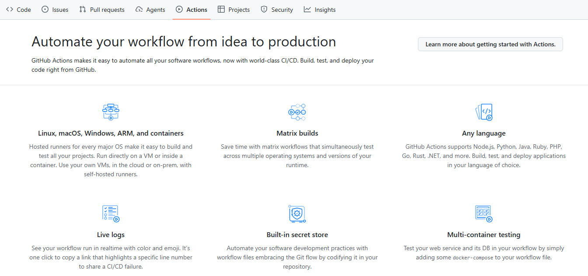
Además:
-
Podrás realizar la construcción y prueba de tus proyectos en los runners para cada sistema operativo principal. Ejecuta directamente en una máquina virtual o dentro de un contenedor.
-
Usa una matriz de flujos de trabajo para probar simultáneamente en varios sistemas operativos y versiones de tu entorno de ejecución.
|
Consulta la documentación oficial de GitHub Actions para más información, pueden empezar aquí. |
2. Componentes de GitHub Actions
Un flujo de trabajo (workflow) de GitHub Actions es un proceso automatizado configurable que ejecutará uno o más trabajos (jobs) cuando se produzca un evento específico en el repositorio. Un flujo de trabajo se define en un archivo YAML dentro del directorio .github/workflows de tu repositorio.
Un evento es una actividad específica en un repositorio que desencadena una ejecución de flujo de trabajo. El archivo YAML describe el evento que desencadena el flujo de trabajo, los trabajos que se ejecutarán y los pasos que cada trabajo realizará.
El flujo de trabajo contiene uno o varios trabajos (jobs) que se pueden ejecutar en orden secuencial o en paralelo.
Cada trabajo se ejecutará dentro de su propio ejecutor de máquina virtual o dentro de un contenedor, y tendrá uno o varios pasos que pueden ejecutar un script que defina, o bien una acción, que es una extensión reutilizable que puede simplificar el flujo de trabajo.
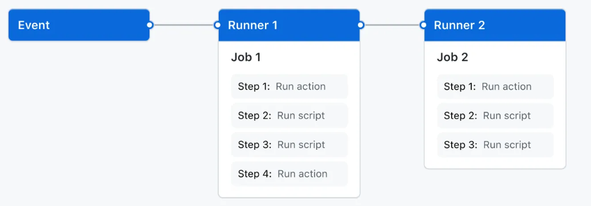
Algunos de los pasos mas comunes en un flujo de trabajo son:
-
Checkout: Obtener el código del repositorio.
-
Setup: Configurar el entorno de ejecución, por ejemplo, instalando una versión específica de Java.
-
Build: Construir el proyecto, por ejemplo, ejecutando un comando de Maven.
-
Test: Ejecutar los tests del proyecto.
-
Deploy: Desplegar la aplicación a un entorno de producción o staging.
Los pasos pueden ser definidos por el usuario (run) o reutilizar acciones creadas por la comunidad (uses).
-
Definidos por el usuario: Puedes ejecutar comandos específicos en cada paso. Se realizan usando la clave
runen el archivo YAML del flujo de trabajo. -
Reutilizar acciones: Puedes usar acciones predefinidas creadas por GitHub o por la comunidad. Estas acciones se pueden encontrar en el Marketplace de GitHub Actions y se pueden incorporar a tu flujo de trabajo usando la clave
usesen el archivo YAML.
Algunos ejemplos de acciones populares son:
-
actions/checkoutpara obtener el código del repositorio, -
actions/setup-javapara configurar el entorno de Java -
mikepenz/action-junit-reportpara publicar informes de tests de JUnit. -
etc.
3. Creando tu primer workflow
A continuación, vamos a añadir un workflow que muestra las características esenciales de GitHub Actions.
Este ejemplo muestra como los trabajos de GitHub Actions pueden ser ejecutados automáticamente, donde corren y como interactuan con el código de tu repositorio.
-
Clona en tu equipo el repositorio creado anteriormente.
-
Crea un directorio
.github/workflows. -
En este directorio, crea un fichero llamado
github-actions-demo.yml. -
Copia el siguiente contenido YAML en el fichero anterior.
github-actions-demo.ymlname: GitHub Actions Demo (1) on: [push] (2) env: FORCE_JAVASCRIPT_ACTIONS_TO_NODE24: "true" jobs: Explore-GitHub-Actions: (3) runs-on: ubuntu-latest (4) steps: - run: echo "🎉 The job was automatically triggered by a ${{ github.event_name }} event." (5) - run: echo "🐧 This job is now running on a ${{ runner.os }} server hosted by GitHub!" - run: echo "🔎 The name of your branch is ${{ github.ref }} and your repository is ${{ github.repository }}." - name: Check out repository code (6) uses: actions/checkout@v6 (7) - run: echo "💡 The ${{ github.repository }} repository has been cloned to the runner." - run: echo "🖥️ The workflow is now ready to test your code on the runner." - name: List files in the repository run: | ls ${{ github.workspace }} - run: echo "🍏 This job's status is ${{ job.status }}."1 Nombre del workflow. 2 Cuando se ejecuta el workflow. En este caso al hacer push en cualquier rama. 3 Nombre del primer trabajo (job) del workflow. 4 Máquina donde se ejecuta el trabajo. 5 Comando de terminal bash. 6 Nombre del paso. 7 Reutilización de un actioncreada por otro usuario. En este caso es la que se utiliza para obtener el código del repositorio. -
Hacemos
commitde los cambios y hacemospusha la rama remotagit add -A && git commit git push origin main
|
Debes respetar estrictamente los espacios y saltos de línea del contenido YAML para evitar errores de sintaxis. |
3.1. Comprobando el resultado
|
Es posible que la GitHub Actions no se ejecute instantaneamente y tarde un poco en aparecer. Los recursos son compartidos entre todos los usuarios de GitHub. |
-
En la página principal del repositorio, selecciona
Actionsen el menú principal
-
En esta página podemos ver tanto el listado de workflows que tenemos en nuestro repositorio, como las ejecuciones de cada uno. Además podemos ver si ha habido éxito en la ejecución del workflow.
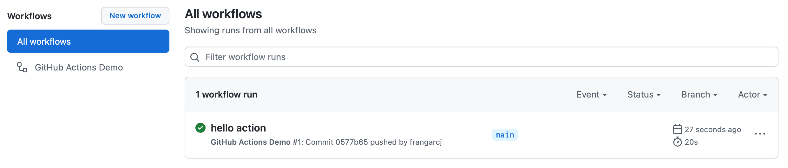
-
Pulsamos en el nombre del commit (
hello actionen la imagen anterior) y accederemos a un resumen de la ejecución. En esta suelen aparecer las estadísticas de tiempo, los artefactos asociados y cada uno de los trabajos o jobs de nuestro workflow.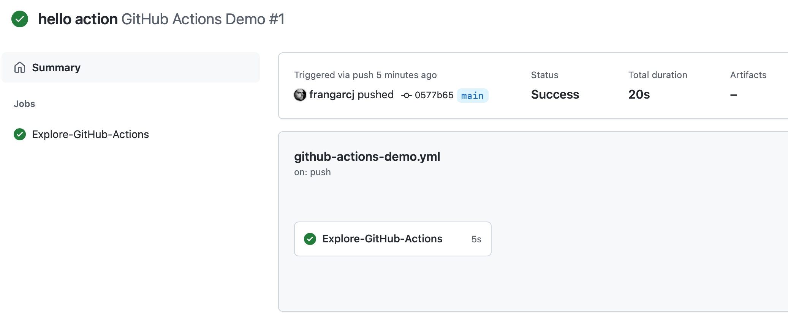
-
Pulsamos en el nombre del trabajo (
Explore-GitHub-Actionsen la imagen anterior) y vemos una descripción de cada una de los pasos o steps del trabajo.
-
Además podemos ver el log de ejecución de cada uno de los pasos.

4. Action Java/Maven build
A continuación, vamos a añadir un workflow que muestra las construccion de un proyecto Java basado en Maven con GitHub Actions.
-
En el directorio
.github/workflowscrea un fichero llamadomaven-build.yml. -
Copia el siguiente contenido YAML:
maven-build.ymlname: Maven Build on: [push] env: FORCE_JAVASCRIPT_ACTIONS_TO_NODE24: "true" jobs: build: (1) runs-on: ubuntu-latest steps: - name: Check out repository code uses: actions/checkout@v6 - name: Set up JDK 21 (2) uses: actions/setup-java@v5 with: java-version: '21' distribution: 'temurin' - name: Build with Maven (3) run: mvn -B package --file pom.xml - name: Publish JUnit Test Report (4) if: always() uses: mikepenz/action-junit-report@v6 with: report_paths: target/surefire-reports/TEST-*.xml detailed_summary: true include_passed: true check_title_template: "{{SUITE_NAME}}/{{TEST_NAME}}"1 Nombre del trabajo (job) que se encarga de construir el proyecto con Maven. 2 Paso para configurar el JDK 21 en el runner. 3 Paso para ejecutar el comando de construcción de Maven. 4 Paso para publicar el informe de tests de JUnit. Este paso se ejecuta siempre, incluso si el paso anterior falla, gracias a la condición if: always().
4.1. Resultado del build
Después de hacer push a la rama remota, el workflow se ejecutará automáticamente.
-
Para comprobar el resultado, seguimos los mismos pasos que en el apartado anterior para acceder al resumen de la ejecución del workflow. El resumen muestra además un informe detallado de los tests ejecutados, gracias al paso de publicación del informe de JUnit que añadimos en el workflow.
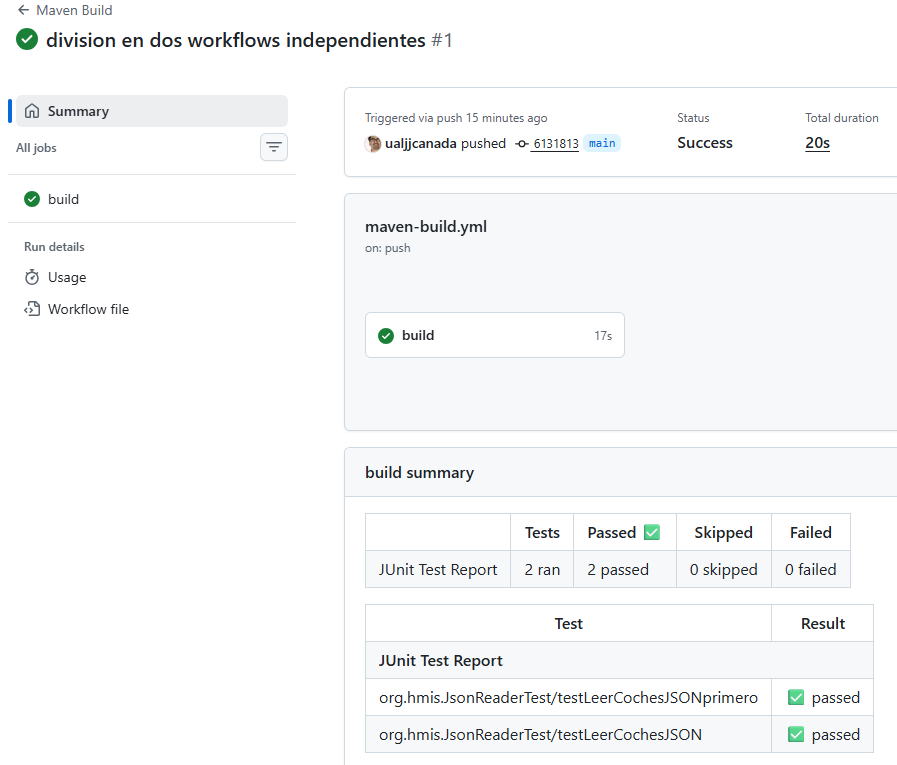
-
Pulsamos en el nombre del trabajo (
builden la imagen anterior) y vemos una descripción de cada una de los pasos o steps del trabajo.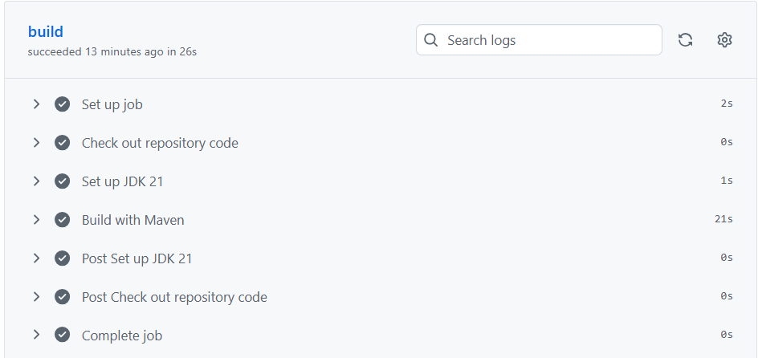
-
Además podemos ver el log de ejecución de cada uno de los pasos. En la construcción con Maven, por ejemplo, podemos ver el resultado de los tests ejecutados (usando el filtro
TESTSen la imagen siguiente).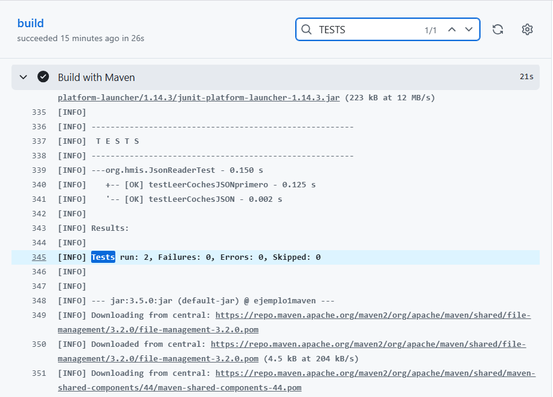
5. Estado de la construcción
Tras la ejecución del workflow, el estado de la construcción se muestra en la página principal del repositorio, junto al nombre de cada commit. El estado puede ser success, failure o pending dependiendo del resultado de la ejecución
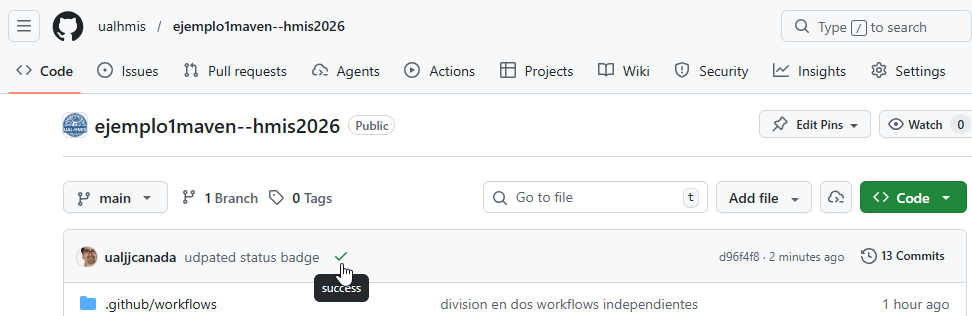
Además, es habitual generar un badge de estado de la construcción para incorporarlo en el README.md del repositorio. Para ello, accede a la página de Actions y pulsa en el botón Create status badge que aparece en la parte derecha de la pantalla.
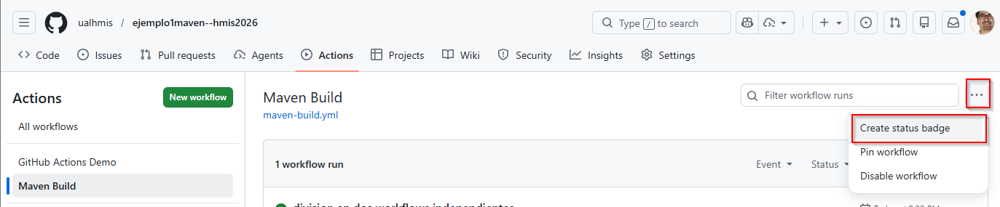
Esto generará un código Markdown que puedes incluir en el README.md de tu repositorio para mostrar el estado del workflow.
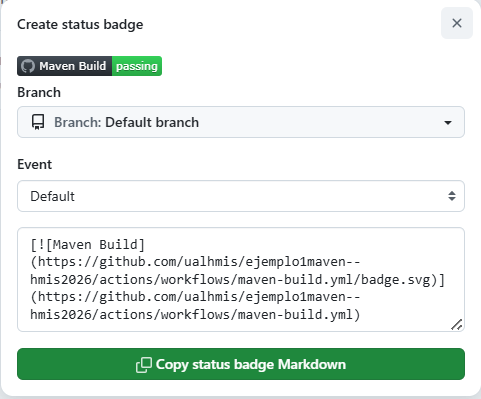
Pegando este código en el README.md y haciendo push a la rama remota, el badge de estado de la construcción aparecerá en la página principal del repositorio.
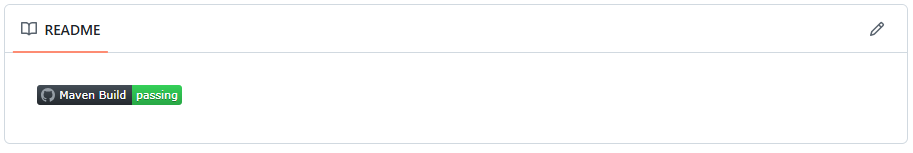
Conclusión
En esta sección hemos visto cómo crear un workflow de GitHub Actions para ejecutar un trabajo de construcción con Maven. Hemos comprobado el resultado del workflow y el informe de tests generado. Además, hemos visto cómo se muestra el estado de la construcción en la página principal del repositorio y cómo generar un badge de estado para incluirlo en el README.md del repositorio.